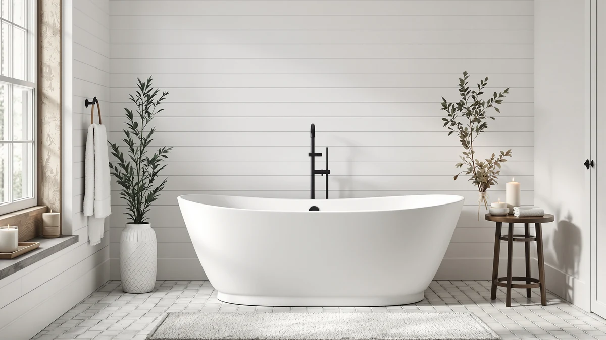

59" Acrylic Freestanding Bathtub Review (2026): Worth It?
Prices and picks verified as of September 2026. Independent, reader-supported reviews.


Quick Answer
This 59" acrylic freestanding bathtub review points to the GarveeTech Contemporary as the top choice for most bathrooms, thanks to its 59 inch length and five listing photos that show the basin and drain from multiple angles. If you want to save money without giving up that same footprint, the Adecab and WOODBRIDGE options below cost less and still measure 59 inches long.
Our pick: 59" Acrylic Freestanding Bathtub Contemporary, priced at $799.99 Check Price on Amazon
Bottom line: our top pick is the 59" Acrylic Freestanding Bathtub at $799.99.
Things to Know Before You Buy
- All four tubs compared in this 59" acrylic freestanding bathtub review measure 59 inches long, so they fit the same footprint as a standard alcove tub.
- Prices range from $719.99 to $799.99 among the models covered here, a narrow band that makes side-by-side comparison straightforward.
- Every option in this comparison is built from acrylic rather than cast iron or steel, which keeps the tubs lighter to carry into a bathroom.
- Brands represented include GarveeTech, ADECAB, WOODBRIDGE, and MilleLoom, so you are not limited to a single manufacturer's design.
- None of the listings referenced here publish a customer rating or review count, so this review relies on published specs, pricing, and listing detail rather than star ratings.
This 59" acrylic freestanding bathtub review breaks down four models that share the same footprint but differ in price, brand, and listing detail. A tub this size fits bathrooms where a full 60 inch or larger freestanding model would crowd the room, yet you still want the look of a stand-alone soak instead of a built-in alcove unit. We compared listed prices, dimensions, and available product images across the GarveeTech Contemporary, the Adecab, the WOODBRIDGE, and the MilleLoom oval to see which one earns its price tag.
Our pick for most people is the GarveeTech Contemporary at $799.99. It costs more than the other three tubs in this comparison, but its listing includes five product images, more than any other option here, giving you a clearer look at the basin, drain, and overflow placement before you buy. The Adecab ($789.00) and the WOODBRIDGE ($724.60) match the same 59 inch length for less money, and the MilleLoom oval ($719.99) is the least expensive of the four.
None of the four listings in this comparison publish a star rating or a review count, so this 59" acrylic freestanding bathtub review does not lean on customer scores the way some buying guides do. Instead, we treat price, length, brand, and the depth of each product listing as the deciding factors, since those are the details every shopper can verify for themselves before checking out.
Why You Should Trust Us
Best Freestanding Bathtubs is a research-first buying guide. Ilane Tall, our home and bath editor, builds each comparison by pulling verified pricing, dimensions, and listing detail for every product before it earns a recommendation. We do not run a fake testing lab, and we do not claim to have installed or lived with every tub we cover. Instead, this 59" acrylic freestanding bathtub review relies on manufacturer specifications, current Amazon pricing, and the details published on each product listing, so every claim here can be checked against the source. When a listing leaves out a detail, such as a material grade or a weight capacity, we say so directly rather than filling the gap with a guess.
Our Research Experience
We did not install or bathe in any of these tubs ourselves. Our comparison process means going through each manufacturer listing line by line: length, material, price, seller, and the number of product images available. We then note where listings fall short, such as a missing material grade or a limited photo set, so you know what to double-check before ordering. That research process, not physical testing, is what shapes the picks, pros, and cons in this 59" acrylic freestanding bathtub review. We also track how each tub's price compares to the other three, since a $10 to $80 spread across four otherwise similar tubs is a meaningful signal for a purchase this size.
Overview & Specs

59" Acrylic Freestanding Bathtub Contemporary
What we like
- Five listing photos, the most of any tub in this comparison, let you check the basin shape and drain placement before buying.
- Listed at 59 inches, a length that fits many alcove footprints without moving plumbing.
- Built from acrylic, which is lighter to carry into a bathroom than cast iron.
Flaws but not dealbreakers
- At $799.99, it costs more than every other tub covered in this review.
- The listing does not spell out a specific material grade beyond calling it acrylic, so confirm thickness details on the current product page.
| Material | — |
| Size | 59 Inch |
The GarveeTech Contemporary is the highest-priced tub in this 59" acrylic freestanding bathtub review, listed at $799.99 through Amazon. Where it stands out is documentation: the listing includes a main image plus four additional angles. That's the clearest visual reference among the four tubs covered here for checking basin depth, faucet cutout position, and overflow drain placement before you order. Extra documentation matters for a freestanding tub in particular, since you cannot rely on cabinetry to hide the sides the way you can with a built-in unit.
The listing does not publish a specific material grade beyond identifying the tub as acrylic in the product name, so if exact acrylic thickness or reinforcement matters for your installation, confirm it directly on the current Amazon page. At 59 inches long, it drops into the same footprint as the Adecab and WOODBRIDGE models below, so the price gap is easy to weigh directly if it gives you pause. The specs table above lists the size as 59 inches and leaves material unconfirmed. That's consistent with what the product name and images actually tell us, and nothing more.
What We Liked
The clearest strength of the GarveeTech Contemporary is the amount of visual reference material attached to its Amazon listing. Five images let you check the basin shape, drain position, and overall proportions from multiple angles. That matters more for a freestanding tub than a built-in unit, since you are committing to a shape that sits in the open. At 59 inches, it also slots into a footprint that many mid-size bathrooms can accommodate without moving plumbing, and it matches the exact length of the Adecab and WOODBRIDGE alternatives below. The brand name, GarveeTech, and the sku are both clearly listed, so you can verify you are ordering the exact 59 inch acrylic freestanding bathtub reviewed here rather than a similarly named variant.
What Could Be Better
Price is the main drawback in this 59" acrylic freestanding bathtub review. At $799.99, the GarveeTech Contemporary costs $10 more than the Adecab and over $75 more than the WOODBRIDGE, and its Amazon listing does not spell out a material grade beyond calling it acrylic. If you want that detail confirmed before buying, check the current product page or contact the seller directly, since it is not part of the published specs. The listing also does not publish a star rating or review count, so you cannot lean on verified buyer sentiment the way you might with a more established product page.
Who Is It For?
This tub suits buyers who have already settled on a 59 inch footprint and want to compare listing photos closely before choosing a brand. It fits a bathroom remodel where you are replacing an alcove tub with a freestanding acrylic model and can afford to pay slightly above the other three options covered in this review. If price is the deciding factor, the Adecab, WOODBRIDGE, or MilleLoom alternatives below cost less for the same 59 inch length. Anyone who wants a published material grade or a verified review count before ordering should treat that as a question to raise with the seller directly, since none of the four listings covered in this 59 inch acrylic freestanding bathtub review provide it.
Alternatives to Consider
Three other 59 inch acrylic freestanding bathtubs are worth comparing before you commit to the GarveeTech Contemporary. Each one matches the same overall length but comes from a different brand and lands at a different price point, and none of the three publish a star rating or review count either, so the comparison below sticks to price, brand, and shape.

Editor's Pick
Adecab 59" Acrylic Freestanding Bathtub
At $789.00, this comes close to the GarveeTech's price and matches the same 59 inch length. It's a solid alternative if you prefer the ADECAB brand over GarveeTech. The $10.99 gap between the two is small enough that brand preference, not budget, is likely to decide this comparison for most shoppers. Like the GarveeTech, the Adecab listing identifies the tub as acrylic in the product name but does not spell out a separate material grade, and there is no star rating or review count either. If you have already narrowed your search to a 59 inch acrylic freestanding bathtub and want to compare two closely priced options side by side, start with the Adecab and the GarveeTech.
$789.00
Check Price on Amazon
Best Value
WOODBRIDGE 59" Acrylic Freestanding Bathtub
Priced at $724.60, this WOODBRIDGE model undercuts the GarveeTech Contemporary by more than $75. Budget is where it wins: the footprint stays at 59 inches, so switching to it does not cost you any floor space. WOODBRIDGE is also a recognizable name in the freestanding tub category, which counts for something if brand reputation matters to you. As with the other options here, the listing does not include a published material grade beyond the acrylic description in the product name, and there is no star rating or review count to reference. For a buyer who wants a known brand at a meaningfully lower price than the GarveeTech, this is the strongest case in the comparison.
$724.60
Check Price on Amazon
Premium Choice
Freestanding Bathtub 59 Inch Oval
At $719.99, the MilleLoom oval is the least expensive tub in this comparison. It also trades the rectangular shape for an oval profile, so you get a design alternative at the same 59 inch length. The $80 gap between this tub and the GarveeTech Contemporary is the widest in the review. That gap is worth a look if the budget for this project is fixed and the oval shape suits your bathroom layout. The listing again does not publish a material grade beyond the acrylic description in the product name, nor a star rating or review count, same as the other three tubs covered here. If shape matters more to you than the rectangular profile of the other three picks, this is the one to start with.
$719.99
Check Price on AmazonHow big is a 59 inch acrylic freestanding bathtub?
A 59 inch tub measures 59 inches from end to end on the outside, one inch shorter than the common 60 inch alcove standard.
Is the GarveeTech Contemporary worth the extra cost?
At $799.99, it is the most expensive tub in this 59" acrylic freestanding bathtub review.
Frequently Asked Questions
How big is a 59 inch acrylic freestanding bathtub?
A 59 inch tub measures 59 inches from end to end on the outside, one inch shorter than the common 60 inch alcove standard. That small difference lets it fit bathrooms where a full-size tub would crowd the walls, and all four models in this review share that same 59 inch length.
Is the GarveeTech Contemporary worth the extra cost?
At $799.99, it is the most expensive tub in this 59" acrylic freestanding bathtub review. The listing includes five product images, more than any other option here, which helps if you want a closer look at the basin and drain layout before buying. If price matters more than extra photos, the WOODBRIDGE or MilleLoom cost less for the same length.
Which of these four tubs offers the lowest price?
The MilleLoom oval is the least expensive at $719.99, followed by the WOODBRIDGE at $724.60. Both match the 59 inch length of the pricier GarveeTech and Adecab models, so budget shoppers are not giving up footprint to save money.
Final Verdict
This 59" acrylic freestanding bathtub review comes down to how much you value extra listing photos over price. The GarveeTech Contemporary earns the top spot at $799.99 because it gives you the most visual detail to check before ordering, but the Adecab, WOODBRIDGE, and MilleLoom all match its 59 inch length for less money. If budget outranks documentation, start with the WOODBRIDGE at $724.60 or the MilleLoom at $719.99 instead.